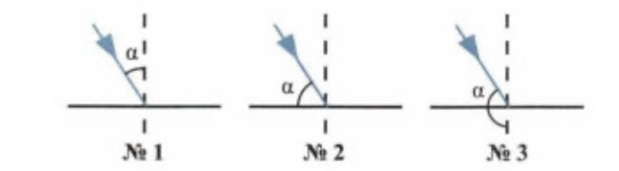
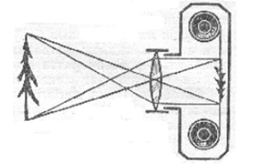

1. Чем тепловые источники света отличаются от холодных?
2. При каких условиях происходит солнечное затмение?
3. Как называется линия, по которой распространяется свет?
4. В солнечный день длина тени на Земле составляет 80 см от ели 1,5 м, а от березы – 8 м. какова высота
березы?
5. В солнечный день тень от дома на Земле имеет длину 35 м, а тень от вертикально стоящей палки высотой 1
м имеет длину 2 м. какова высота дома?
6. Угол падения луча равен 45° . Постройте угол отражения.
7. Угол между плоскостью зеркала и отраженным лучом равен 60°. Постройте угол падения луча.
На сколько изменится угол между падающим и отраженным лучами если угол падения уменьшится на 15°?
9. На рисунках должны быть обозначены углы падения светового луча. На каком из них это обозначение
сделано верно?

10. Луч света падает на зеркало под углом 85° к его поверхности. Чему равен угол между падающим и
отраженным лучами? Чему равен угол отражения?
11. Луч света падает из стекла на поверхность воды под углом 40°. Определите угол преломления.
12. На границу сред вода - стекло падает луч света под углом 40°. Oпpеделите угол преломления луча.
13. Луч света падает на плоскую границу раздела двух сред. Угол падения равен 50°, угол между отраженным
лучом и преломленным 100°. Чему равен угол преломления?
14.Угол между отраженным и преломленным лучами 110°. Чему равна сумма углов падения и преломления?
15. На оконное стекло падает луч света, образующий с плоскостью стекла угол 25°. Каким будет угол между
лучом, отраженным от стекла, и прошедшим сквозь стекло?
16. Количество изображений в зеркале,если угол между зеркалами 90°?
17. Количество изображений в зеркале,если угол между зеркалами 45°?
18. Формула сферического зеркала
19. Когда объект не дает изображения в вогнутом зеркале?
20. Каким будет изображение объекта в выпуклом зеркале?
21. Высота предмета 2см. Чтобы получить изображение высотой 1 м, каким должно быть фокусное расстояние
линзы, находящегося на расстоянии 4 м от экрана?
22. Линзу с оптической силой 2,5 дптр поместили на расстоянии 0,5 м от ярко освещённого предмета. На
каком расстоянии следует поместить экран, чтобы увидеть на нём чёткое изображение предмета?
23. Предмет высотой 3 см находится на расстоянии 40 см от собирающей тонкой линзы. Определите высоту
изображения, если оптическая сила линзы равна 4 диоптриям.
24. Изображение предмета сформировалось на расстоянии 30 см от линзы. Известно, что оптическая сила этой
линзы равна 4 дптр. Найдите линейное увеличение.
25. Формула тонкой линзы
26. Какой оптический прибор похож на человеческий глаз?
27. Ученик носит очки с оптической силой +2 дптр. Какое фокусное расстояние у очков?
28. Какое изображение дает камера на картинке?

29. Врач предложил Арману носить очки с оптической силой -1 дптр. Какой дефект в глазах Армана?
30.Какие проблемы с глазами устраняют очки со собирающей линзой?